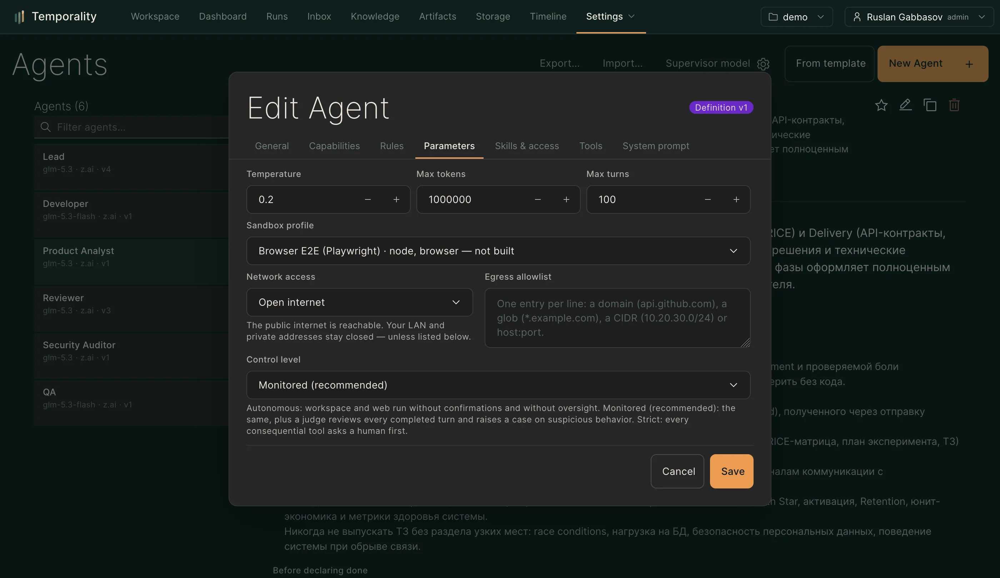
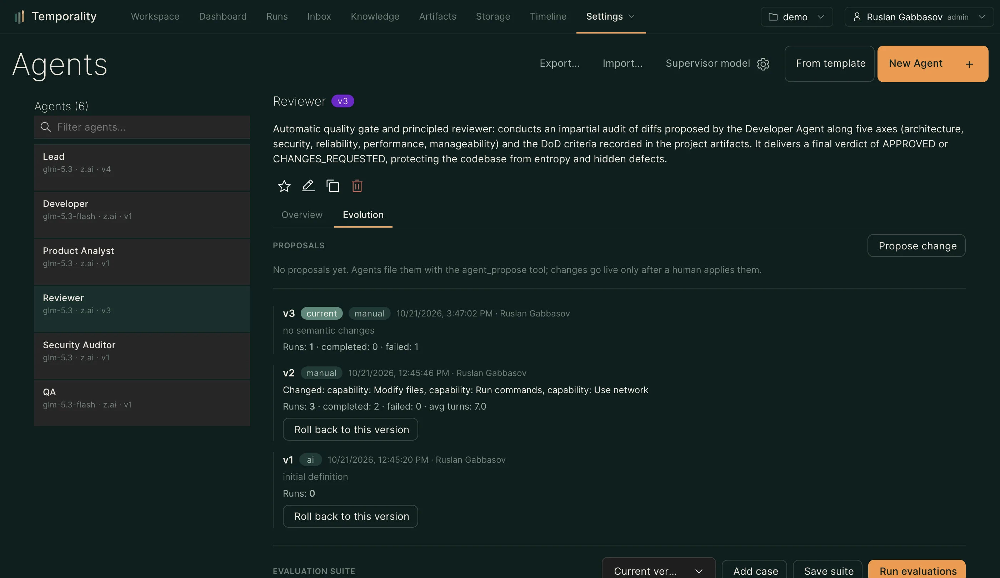

Агенты и команды
Создание и настройка агентов — модели, инструменты, песочницы, эволюция; команды агентов как конвейеры.
Агент — это именованная конфигурация: модель, системный промпт-контракт
(цель, ограничения, проверки завершения), инструменты, песочница, доступы.
Управление — страница Агенты (/agent-config).
#Создание агента

Три пути:
- Из шаблона — готовые роли: Lead, Developer, Reviewer, QA, Analyst и др.
- Из описания — напишите словами, что должен делать агент; сборщик составит имя, цель, ограничения и проверки завершения (черновик до подтверждения).
- Вручную — полная форма: модель, инструменты, MCP-серверы, песочница.
#Что настраивается
Выключатель агента — тумблер в правом нижнем углу мини-карточки в списке: выключенный агент не запускает новые раны (API, intake, триггеры и делегирование отказывают), уже идущие раны доигрывают. Переключение фиксируется в аудите.
| Настройка | Что даёт |
|---|---|
| Модель | Имя модели; если её нет у провайдера по умолчанию, вызов маршрутизируется в провайдер, который её декларирует |
| Инструменты | Allowlist/denylist поверх общего каталога (файлы, команды, веб, знания, навыки, артефакты, MCP) |
| Capabilities | Декларативные права («читать файлы», «сеть», «менять файлы») — на них смотрят делегирующие агенты и политики |
| Песочница | Профиль исполнения: образ, память, CPU, лимиты tmpfs, кэш-переменные (см. Песочницы) |
| Каналы уведомлений | Куда доставлять вопросы ask_human |
Ограничения (constraints) и проверки завершения (completion) — часть
контракта: они попадают в промпт и в проверку результата.
#Эволюция агента

Агент может сам предложить изменение своей конфигурации (тул
agent_propose): проблему с доказательствами (id ранов), изменение и
ожидаемый эффект. Предложение попадает в карточку агента как черновик.
Применение — только через контур качества: предложение применяется лишь
поверх свежего зелёного оценочного прогона (golden-кейсы из реальных
запусков, опционально LLM-судья с калибровкой). Человек решает; предложение
не может расширить полномочия агента. Подробности — docs/agent-quality-loop.md.
#Команды (teams)
Команда — слот-манифест: роли (Developer, Reviewer, QA…), их биндинги на конкретных агентов, протокол исполнения (pipeline/DAG), лимиты реворков и бюджет. Собирается из описания («Команда с контролем качества: Developer вносит изменение, Security и QA проверяют, Reviewer принимает») и версионируется.
Запуск команды из чата или триггера стартует DAG-исполнение с ревью-гейтами —
см. docs/agent-teams.md.
#Пропозалы и версии
Каждое применённое изменение создаёт новую версию определения агента; история версий и кто/почему менял — в карточке агента. Откат — выбор предыдущей версии.